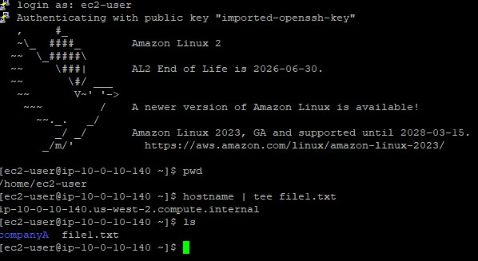
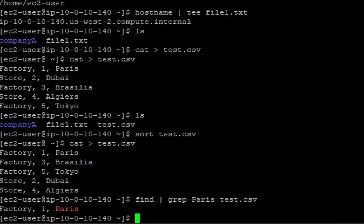
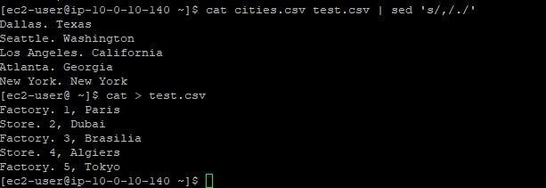

Piping Output
Executed overlapping routines simultaneously using the pipe character linking outputs dynamically.
Learn to manipulate data streams using powerful shell utilities. Use tee for simultaneous output, sort for ordering records, cut for isolating columns, and the pipe operator to chain sequences together.
Connected via PuTTY
(as described in Lab 225).
Began by piping the system hostname into the
tee command for dual output. Constructed raw CSV lists via
cat to test the capabilities of sort and
cut against delimiter-separated values, ultimately chained together
with robust piping architecture to discover string patterns using grep.
Executed overlapping routines simultaneously using the pipe character linking outputs dynamically.
Employed sort techniques against CSV data to normalize and arrange records alphanumerically.
Spliced specific text columns using the cut toolkit mapping exact delimiter targets.
Detailed record of each task performed during the lab manipulation suite.
hostname | tee file1.txt which queried the server name and,
via a pipe, handed it to tee.tee relayed the hostname (e.g., ip-xx.region.compute.internal)
both up to the console screen and down into the new file file1.txt.ls utility.
cat > test.csv.CTRL+D.sort test.csv, allowing the daemon to sequence
the records alphabetically by title block, then numerically.find and string matching:
find | grep Paris test.csv ensuring nested operations search for specific locales efficiently.
cat > cities.csv, saving US cities and states.cut -d ',' -f 1 cities.csv.-d ',' delimiter switch mapped against every comma, and
the -f 1 switch retained merely the leading column (the city name), severing formatting.sed (stream editor) application can manipulate text identically
via sed 's/old/new/' filename format algorithms.
Primary utilities executed within the data modeling operations.
teeReads from standard input and writes strictly forward to standard output and simultaneously into specified files.
sortPrints the lines of its input or concatenation of multiple files arranged in specified sequence orders.
cutRemoves sections from each line of a file.
-d : Declares the custom delimiter to target beyond whitespace-f : Indicates which column field number to select or displaytee service bridging log capture and console confirmation.sort baseline behavior.cut tool's precise delimiter scoping logic (e.g., isolating commas).| feature extending the capabilities of individual binaries.
Understanding standard input, output, and redirection is important when architecting robust data-pipelines.
By exploiting the | pipe mechanics, sequential tasks that normally require discrete intermediary
text files can occur instantly in RAM.
Text-parsing appliances (sort, cut, sed) unlock profound search
mechanisms that guarantee sysadmins can triage dense log infrastructures efficiently compared to traditional
graphical editors.